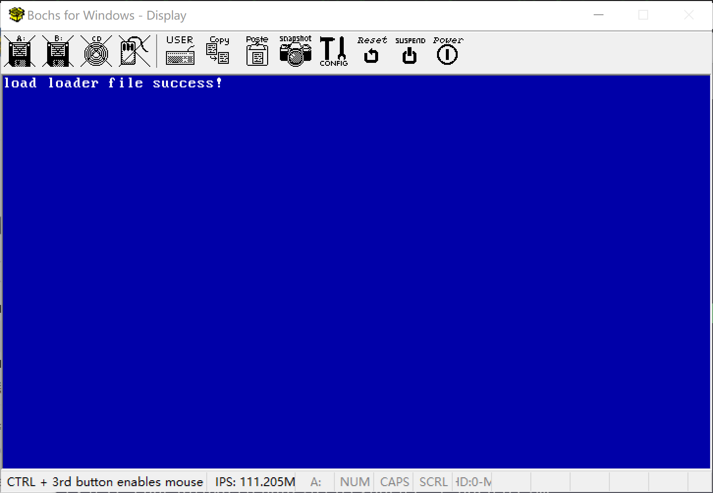

2.7_读取磁盘_LBA方式
文章目录
读取磁盘_LBA方式
LBA简介
LBA方式访问使用了data寄存器，LBA寄存器（总共3个），device寄存器，command寄存器来完成的。
LBA28和LBA48方式： LBA28方式使用28位来描述一个扇区地址，最大支持128GB的硬磁盘容量。
LBA28的寄存器
读取时参数：
| 寄存器 | 端口 | 作用 |
|---|---|---|
| data寄存器 | 0x1F0 | 已经读取的数据，大小为两个字节（16位数据) 每次读取1个word,反复循环，直到读完所有数据 |
| features寄存器 | 0x1F1 | 读取时的错误信息 |
| sector count寄存器 | 0x1F2 | 指定读取的扇区数 |
| LBA low寄存器 | 0x1F3 | lba地址的低8位（0~7位） |
| LBA mid寄存器 | 0x1F4 | lba地址的中8位（0~7位） |
| LBA high寄存器 | 0x1F5 | lba地址的高8位16~23位） |
| device寄存器 | 0x1F6 | 第0-3位： lba地址 第4位：主盘值为0，从盘值为1 第5位：值为1 第6位：读取方式,LBA模式为1，CHS模式为0 第7位: 值为1 |
| command寄存器 | 0x1F7 | 指定读取或写入的命令，返回磁盘状态 读取扇区:0x20 写入扇区:0x30 磁盘识别:0xEC |
写入时参数
| 寄存器 | 端口 | 作用 |
|---|---|---|
| data寄存器 | 0x1F0 | 已经写入的数据，大小为两个字节（16位数据) 每次读取1个word,反复循环，直到读完所有数据 |
| features寄存器 | 0x1F1 | 写入时的额外参数 |
| sector count寄存器 | 0x1F2 | 指定读写入的扇区数 |
| LBA low寄存器 | 0x1F3 | lba地址的低8位（0~7位） |
| LBA mid寄存器 | 0x1F4 | lba地址的中8位（0~7位） |
| LBA high寄存器 | 0x1F5 | lba地址的高8位（16~23位） |
| device寄存器 | 0x1F6 | 第0-3位： lba地址 第4位：主盘值为0，从盘值为1 第5位：值为1 第6位：读取方式,LBA模式为1，CHS模式为0 第7位: 值为1 |
| command寄存器 | 0x1F7 | 指定读取或写入的命令，返回磁盘状态 读取扇区:0x20 写入扇区:0x30 磁盘识别:0xEC |
IDE通道1，读写0x1f0-0x1f7号端口
IDE通道2，读写0x170-0x17f号端口
CHS方式:
| 寄存器 | 端口 | 作用 |
|---|---|---|
| data寄存器 | 0x1F0 | 已经读取或写入的数据，大小为两个字节（16位数据) 每次读取1个word,反复循环，直到读完所有数据 |
| features寄存器 | 0x1F1 | 0 |
| sector count寄存器 | 0x1F2 | 指定读取的扇区数 |
| LBA low寄存器 | 0x1F3 | 扇区号 |
| LBA mid寄存器 | 0x1F4 | 柱面的低8位 |
| LBA high寄存器 | 0x1F5 | 柱面的高8位 |
| device寄存器 | 0x1F6 | 第0-3位：磁头号 第4位：主盘值为0，从盘值为1 |
| 第5位：值为1 | ||
| 第6位：读取方式,LBA模式为1，CHS模式为0 | ||
| 第7位: 值为1lba地址的前4位（占用device寄存器的低4位） |
||
| command寄存器 | 0x1F7 | 指定读取或写入的命令，返回磁盘状态 读取扇区:0x20 第4位为0表示读写完成，否则要一直循环等待 写入扇区:0x30 磁盘识别:0xEC |
48-bit LBA方式:
写两次0x1f1端口: 0
写两次0x1f2端口: 第一次要读的扇区数的高8位,第二次低8位
写0x1f3: LBA参数的24~31位
写0x1f3: LBA参数的0~7位
写0x1f4: LBA参数的32~39位
写0x1f4: LBA参数的8~15位
写0x1f5: LBA参数的40~47位
写0x1f5: LBA参数的16~23位
写0x1f6: 7~5位,010,第4位0表示主盘,1表示从盘,3~0位,0
写0x1f7: 0x24为读, 0x34为写
读取硬盘
1）sector count寄存器寄存器写入读取的扇区数 2）LBA low寄存器，LBA mid寄存器，LBA high寄存器写入lba地址 3）device寄存器写入lba地址和读取模式 4）command寄存器写入写入命令 5）读取两个字节数据，多次循环直到读取完扇区数据。
代码
boot.asm 引导文件，初始化屏幕后，读取硬盘并加载4个扇区到内存位置[0x90000]处。然后跳转到0x90000处执行指令。
|
|
loader.asm
被引导扇区加载到0x90000位置，执行输出hello in loader文字
|
|
运行
创建build.sh脚本
|
|
创建run.sh脚本
|
|
运行结果

文章作者 寒冰
上次更新 2018/11/17